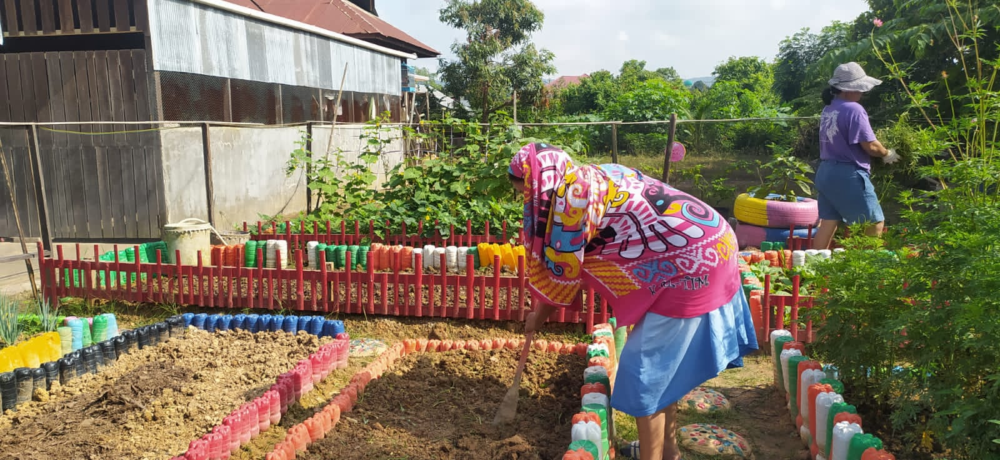

Foto Kegiatan



Kenikir 1 merupakan salah satu kelompok dasawisma di RT 18 yang beralokasi di Jl. Merpati VI, Kampung Tator Desa Singa Gembara, Kecamatan Sangatta Utara Kabupaten Kutai Timur. Dasawisma sendiri merupakan kelompok yang terdiri dari sejumlah rumah tangga yang biasanya berada dalam satu lingkungan RT (Rukun Tetangga) atau RW (Rukun Warga).
Lihat Maps